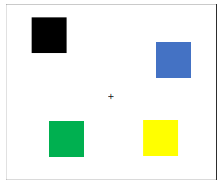
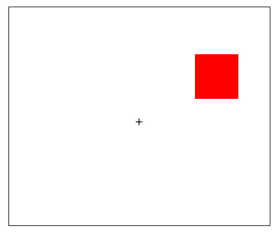

<!DOCTYPE html>
<html>

<head>
    <title>My experiment</title>
    <script src="jspsych.js"></script>
    <script src="plugins/jspsych-resize.js"></script>
    <script src="plugins/jspsych-html-keyboard-response.js"></script>
    <script src="plugins/jspsych-instructions.js"></script>
    <script src="plugins/jspsych-survey-text.js"></script>
    <script src="plugins/jspsych-survey-multi-choice.js"></script>
    <script src="plugins/jspsych-fullscreen.js"></script>
    <script src="plugins/jspsych-html-button-response.js"></script>
    <link href="css/jspsych.css" rel="stylesheet" type="text/css">
    <!--This experiment consists of three parts (currently one one is in the making)
    The first part is a change detection task, the second is a two-armed bandit task 
    and finally we have a combined version of the two "dual task". The code is based on jspsych package.-->
</head>
<style>
    img {
        height: 250px;
        width: 200px;
    }

    img.fullscreen {
        height: 150px;
        width: 526px;
    }

    /* it could have been nice if it could have been according to the subject's screen size*/
    :root {
        --top_fix: 0px;
        --left_fix: 0px;

        --top_a: 0px;
        --left_a: 0px;
        --top_b: 0px;
        --left_b: 0px;
        --top_c: 0px;
        --left_c: 0px;


        --top_d: 0px;
        --right_d: 0px;
        --top_e: 0px;
        --right_e: 0px;
        --top_f: 0px;
        --right_f: 0px;

        --bottom_g: 0px;
        --right_g: 0px;
        --bottom_h: 0px;
        --right_h: 0px;
        --bottom_i: 0px;
        --right_i: 0px;


        --bottom_j: 0px;
        --left_j: 0px;
        --bottom_k: 0px;
        --left_k: 0px;
        --bottom_l: 0px;
        --left_l: 0px;

        --left_card: 0px;
        --right_card: 0px;
        --top_card: 0px;

        --top_reward: 0px;
        --left_reward: 0px;
    }

    .fixation {
        /* plus fixation will be in the middle of the screen*/
        display: block;
        margin-left: auto;
        margin-right: auto;
        font-size: 15.8px;
    }

    .reward {

        display: block;
        margin-left: auto;
        margin-right: auto;
        height: 100px;
        width: 100px;
    }

    .group {
        height: 135px;
        width: 487px;
    }

    .example {
        height: 135px;
        width: 217px;
    }

    img.card_left {
        position: fixed;
        height: 180px;
        width: 130px;
        left: var(--left_card);
        top: var(--top_card);
    }

    img.card_right {
        position: fixed;
        height: 180px;
        width: 130px;
        right: var(--right_card);
        top: var(--top_card);
    }


    /* we have one image in every quadrant pixels locations are from Balaban et al., 2019 */
    /* first quadrant */
    img.a {
        position: fixed;
        height: 51.4px;
        width: 51.4px;
        top: var(--top_a);
        left: var(--left_a);
    }

    img.b {
        position: fixed;
        height: 51.4px;
        width: 51.4px;
        top: var(--top_b);
        left: var(--left_b);
    }

    img.c {
        position: fixed;
        height: 51.4px;
        width: 51.4px;
        top: var(--top_c);
        left: var(--left_c);
    }

    /* second quadrant */
    img.d {
        position: fixed;
        height: 51.4px;
        width: 51.4px;
        top: var(--top_d);
        right: var(--right_d);
    }

    img.e {
        position: fixed;
        height: 51.4px;
        width: 51.4px;
        top: var(--top_e);
        right: var(--right_e);
    }

    img.f {
        position: fixed;
        height: 51.4px;
        width: 51.4px;
        top: var(--top_f);
        right: var(--right_f);
    }

    /* third quadrant */
    img.g {
        position: fixed;
        height: 51.4px;
        width: 51.4px;
        bottom: var(--bottom_g);
        right: var(--right_g);
    }

    img.h {
        position: fixed;
        height: 51.4px;
        width: 51.4px;
        bottom: var(--bottom_h);
        right: var(--right_h);
    }

    img.i {
        position: fixed;
        height: 51.4px;
        width: 51.4px;
        bottom: var(--bottom_i);
        right: var(--right_i);
    }

    /* fourth quadrant */
    img.j {
        position: fixed;
        height: 51.4px;
        width: 51.4px;
        bottom: var(--bottom_j);
        left: var(--left_j);
    }

    img.k {
        position: fixed;
        height: 51.4px;
        width: 51.4px;
        bottom: var(--bottom_k);
        left: var(--left_k);
    }

    img.l {
        position: fixed;
        height: 51.4px;
        width: 51.4px;
        bottom: var(--bottom_l);
        left: var(--left_l);
    }
</style>

<body>
    <script>
        var root = document.documentElement;
        var vis_angle_px = 105
        root.style.setProperty('--top_fix', window.screen.height / 2 + "px");
        root.style.setProperty('--left_fix', window.screen.width / 2 + "px");
        root.style.setProperty('--top_a', window.screen.height / 2 - vis_angle_px + "px");
        root.style.setProperty('--left_a', window.screen.width / 2 - vis_angle_px + "px");
        root.style.setProperty('--top_b', window.screen.height / 2 - 2 * vis_angle_px + "px");
        root.style.setProperty('--left_b', window.screen.width / 2 - 2 * vis_angle_px + "px");
        root.style.setProperty('--top_c', window.screen.height / 2 - 3 * vis_angle_px + "px");
        root.style.setProperty('--left_c', window.screen.width / 2 - 3 * vis_angle_px + "px");
        root.style.setProperty('--top_d', window.screen.height / 2 - vis_angle_px + "px");
        root.style.setProperty('--right_d', window.screen.width / 2 - vis_angle_px + "px");
        root.style.setProperty('--top_e', window.screen.height / 2 - 2 * vis_angle_px + "px");
        root.style.setProperty('--right_e', window.screen.width / 2 - 2 * vis_angle_px + "px");
        root.style.setProperty('--top_f', window.screen.height / 2 - 3 * vis_angle_px + "px");
        root.style.setProperty('--right_f', window.screen.width / 2 - 3 * vis_angle_px + "px");
        root.style.setProperty('--bottom_g', window.screen.height / 2 - vis_angle_px + "px");
        root.style.setProperty('--right_g', window.screen.width / 2 - vis_angle_px + "px");
        root.style.setProperty('--bottom_h', window.screen.height / 2 - 2 * vis_angle_px + "px");
        root.style.setProperty('--right_h', window.screen.width / 2 - 2 * vis_angle_px + "px");
        root.style.setProperty('--bottom_i', window.screen.height / 2 - 3 * vis_angle_px + "px");
        root.style.setProperty('--right_i', window.screen.width / 2 - 3 * vis_angle_px + "px");
        root.style.setProperty('--bottom_j', window.screen.height / 2 - vis_angle_px + "px");
        root.style.setProperty('--left_j', window.screen.width / 2 - vis_angle_px + "px");
        root.style.setProperty('--bottom_k', window.screen.height / 2 - 2 * vis_angle_px + "px");
        root.style.setProperty('--left_k', window.screen.width / 2 - 2 * vis_angle_px + "px");
        root.style.setProperty('--bottom_l', window.screen.height / 2 - 3 * vis_angle_px + "px");
        root.style.setProperty('--left_l', window.screen.width / 2 - 3 * vis_angle_px + "px");
        //---------------------------------------------------------------------------------------------
        root.style.setProperty('--left_card', window.screen.width / 2 - 2 * vis_angle_px + "px");
        root.style.setProperty('--right_card', window.screen.width / 2 - 2 * vis_angle_px + "px");
        root.style.setProperty('--top_card', window.screen.height / 2 - 0.6 * vis_angle_px + "px");
        root.style.setProperty('--top_reward', window.screen.height / 2 + "px");
        root.style.setProperty('--left_reward', window.screen.width / 2 + "px");

        /*---------------------------------------------------- 
        Squares starts
        ------------------------------------------------------*/
        /* getting the images to display */
        var change_detection_images = ['images/squares/black.png', 'images/squares/blue.png', 'images/squares/brown.png', 'images/squares/cyan.png', 'images/squares/green.png', 'images/squares/magenta.png', 'images/squares/orange.png', 'images/squares/red.png', 'images/squares/yellow.png']
        /* setting the locations to randomize from */
        var locations = [" 4) {
                    random_locations.push(random_2_locations[1])
                }
            }
            return random_locations
        }
        function generate_random_squares() {
            number_of_images = parseInt(condition[0])
            change_detection_images = jsPsych.randomization.shuffle(change_detection_images)
            current_locations = get_locations(locations, number_of_images)
            squares = '';
            for (index = 0; index < number_of_images; index++) {
                squares += current_locations[index] + change_detection_images[index] + ">"
            }
            return squares + fixation;
        }
        var condition = jsPsych.randomization.sampleWithoutReplacement(['4same', '4diff', '8same', '8diff'], 1)[0]
        var fixation = '<div class="fixation">+</div>'

        /*---------------------------------------------------- 
        Timeline for squares starts
        ------------------------------------------------------*/
        var timeline = [];

        var welcome = {
            type: 'html-keyboard-response',
            stimulus: '<p style="text-align: left">Welcome to the experiment.<br><br>This study, performed by Tel Aviv University, is aimed at gaining a better understanding of learning and memory processes.<br>'
                + "In this study we will ask you to complete a memory game called the 'squares game' and a card game, followed by several questionnaires.<br> The study should take about <b>45 minutes</b>.<br><br>"
                + 'For your participation, <b>you will earn a minimum of £2.5, but may earn up to £5 (in total) based on your performance</b> in the included card game.<br>'
                + ' You are free to leave at any time by pressing ‘Esc’ and closing your browser but please note that full payment is provided only for full participation.<br> <b>Please be assured that all data is collected anonymously.</b><br>'
                + '<br><b>Restrictions:</b> You can only participate if you are aged 18 to 50 and are not currently diagnosed with depression, anxiety, epilepsy, learning disabilities, color blindness, or any other psychiatric or neurological disorders.'
                + '<br>Thank you for your participation and please feel free to contact us using the Prolific platform for any question you might have.'
                + '<br><br>Press <b>"Y"</b> to confirm that you read and accept the terms mentioned above.</p>',
            choices: 'y'
        };
        // timeline.push(welcome)
        timeline.push({
            type: 'fullscreen',
            fullscreen_mode: true,
            message: '<p>Please make sure that your browser downloads toolbar is closed and that your browser zoom-in settings are on 100% by pressing ctrl and +/- on your keyboard.<br><br>The experiment will switch to full screen mode when you press the button below</p>'
        });

        var p_details = {
            type: "survey-text",
            questions: [{ prompt: "Enter Prolific ID number", name: 'sub_num' }],
            on_finish: function () {
                subN = JSON.parse(jsPsych.data.getLastTrialData().select('responses').values).sub_num
            }
        }
        //timeline.push(p_details)

        var instructions_squares = {
            type: "instructions",
            pages: ["The experiment will have three parts, we will now start the first one called the <b>'squares game'</b>", "<p>In this part of the experiment, you will see a plus in the middle of the screen.</p>" +
                "<p> I want you to focus on the plus during the whole experiment.</p> " +
                "<p> Then, colored squares will appear on the screen. You need to remember the colors of all of the squares.</p>" +
                "<p> Right afterward, the squares will disappear and instead, one square will show up in a place where one of the squares was previously displayed.</p>" +
                "<p> Your goal is to identify whether this square is in the same or different color as the one previously displayed in this location.</p>" +
                "<p> Press <b>'s'</b> if you think the color is the same and <b>'k'</b> if you think the color is different.</p>" +
                "<p> <u>Please try to be as accurate as possible for the experiment to succeed.<u>", "<div style='width: 700px;'>" +
                "" +
                "<p></p>" +
                "" +
                "<p>You need to press <b>'s'</b> if the color of the individual square is the same as in the group picture.</p>", "<div style='width: 700px;'>" +
                "" +
                "<p></p>" +
                "" +
                "<p>You need to press <b>'k'</b> if the color of the individual square is different than in the group picture.</p>", "<p>We will now start a practice trial.</p>" +
                "<p>Please remember to press <b>'s'</b> if the square is the same and <b>'k'</b> if it is different</p>"],
            show_clickable_nav: true
        };
        var test_instructions_squares = {
            type: 'html-keyboard-response',
            stimulus: '<p>Good Job! <br> You have finished the practice trials.<br> We will now start the real experiment. Please try to be as accurate as possible <br> <br> <b> Press any key to begin.</p>'
        };

        var fixation_memory = {
            type: 'html-keyboard-response',
            stimulus: fixation,
            choices: jsPsych.NO_KEYS,
            trial_duration: 1000,
        }
        var current_locations = null; // set up a global variable 
        var memory = {
            type: "html-keyboard-response",
            stimulus: generate_random_squares,
            choices: jsPsych.NO_KEYS,
            trial_duration: 200,
            data: {
                set_size: function () {
                    return condition[0]
                }
            }
        }

        var fixation_retention = {
            type: 'html-keyboard-response',
            stimulus: fixation,
            choices: jsPsych.NO_KEYS,
            trial_duration: 900
        }
        var test = {
            type: "html-keyboard-response",
            stimulus: function () {
                rand_num = getRandomInt(3)
                if (condition[1] == 's') { /* it is the same condition */
                    square = current_locations[rand_num] + change_detection_images[rand_num] + ">"
                }
                else { /* it is different condition */
                    square = current_locations[rand_num] + jsPsych.randomization.sampleWithoutReplacement(change_detection_images.slice(number_of_images), 1) + ">"
                }
                return square + fixation
            },
            choices: ['s', 'k'],
            trial_duration: 6000,
            data: {
                correct_response: function () {
                    if (condition[1] == 's') {
                        return 's'
                    }
                    else {
                        return 'k'
                    }
                }
            },
            on_finish: function (data) {
                condition = jsPsych.randomization.sampleWithoutReplacement(['4same', '4diff', '8same', '8diff'], 1)[0]
                var correct = false;
                if (data.correct_response == jsPsych.pluginAPI.convertKeyCodeToKeyCharacter(data.key_press)) {
                    correct = true;
                }
                data.is_correct = correct;
            }
        }
        var feedback_squares = {
            type: 'html-keyboard-response',
            stimulus: function () {
                feedback_text = 'incorrect'
                last_trial_correct = jsPsych.data.getLastTrialData().values()[0].is_correct;
                if (last_trial_correct == true) {
                    feedback_text = 'correct'
                }
                return feedback_text
            },
            choices: jsPsych.NO_KEYS,
            trial_duration: 2000
        }

        var demo_procedure_squares = {
            timeline: [fixation_memory, memory, fixation_retention, test, feedback_squares],
            repetitions: 2
        }

        var test_procedure_squares = {
            timeline: [fixation_memory, memory, fixation_retention, test],
            repetitions: 2
        }

        var full_procedure_squares = {
            timeline: [instructions_squares, demo_procedure_squares, test_instructions_squares, test_procedure_squares]
        }
        //timeline.push(full_procedure_squares)
        /*---------------------------------------------------- 
        Cards starts
        ------------------------------------------------------*/
        example_images = ['images/squares/example1.png', 'images/squares/example2.png', 'images/squares/example3.png', 'images/card deck 1/group.jpg', 'images/bag of coins1.png']
        var practice_deck_images = ['images/card deck 1/1.jpg', 'images/card deck 1/2.jpg', 'images/card deck 1/3.jpg', 'images/card deck 1/4.jpg']
        var test_deck_images = ['images/card deck 2/5.jpg', 'images/card deck 2/6.jpg', 'images/card deck 2/7.jpg', 'images/card deck 2/8.jpg', 'images/card deck 3/9.jpg', 'images/card deck 3/10.jpg', 'images/card deck 3/11.jpg', 'images/card deck 3/12.jpg'
            , 'images/card deck 4/13.jpg', 'images/card deck 4/14.jpg', 'images/card deck 4/15.jpg', 'images/card deck 4/16.jpg'
            , 'images/card deck 5/17.jpg', 'images/card deck 5/18.jpg', 'images/card deck 5/19.jpg', 'images/card deck 5/20.jpg']
        var reward_images = ['images/zero_coins.png', 'images/won1-no-back1.png']
        var instructions_cards = {
            type: "instructions",
            pages: ["<p><b>Welcome to the card game part</b></p>"
                + "<p style='text-align:left'>Your winnings in this part will earn you additional payment bonus for the study."
                + " If no extra money will be earned in the card game, you will still get £2.5 for completing the study."
                + " However, <b>you can gain up to an extra £2.5 based on winnings in the game.</b></p>"
                + "<p style='text-align:left'> We will now provide instructions regarding the card game. Please read them carefully. <br>"
                + "You can freely go back and forth between the screens using the buttons at the bottom of the screen.</p> "
                + "<p style='text-align:left'>At the end of the instructions, <b>we will ask you to complete a short test about them</b>, to make sure everything is well understood.</p>",
            "<p style='text-align:left'> Below is an example of a card-deck of four cards, very much like the cards in the game to follow. </p>" +
            "",
            "<p> On each step, only two cards from this deck will be offered (as shown in the example below).<br>You will be able to select the left card by pressing <b>'s'</b> and the right card by pressing <b>'k'</b> on your keyboard."
            + " <br><br>Please do your best to respond as fast and accurate as you can.<br><br>"
            + "",
            "<p style='text-align:left'>After selecting the card, you will see an outcome in the middle of the screen, as shown below.<br>"
            + "<b>Winning very much depends on the card you chose. Some cards are better than others in their deck.</b><br>"
            + "Your task is to find out which card is the best in each deck at any time and choose it."
            + "<p style='text-align:left'><u>Two important things to remember:</u><br></p>"
            + "1. <b>How good a card is can change along the game</b>, somewhat like the value of market products that sometimes worth more and sometimes less.<br>"
            + "2. Only the cards predict an outcome. <b>The response key that was used to select a card does not influence the chances of winning a coin.</b><br><br>"
            + "",
            "<p style='text-align:left'>At the start of the card game, we will first provide you with 100 game-coins."
            + " In the end of the experiment, these will be exchanged to a bonus of up to £2.5."
            + " You will only be able to see your overall winnings in the end of the experiment.<br>"
            + " On every step, <b>try to be focused and find the card that is more likely to earn you a coin.</b>",
            " <p style='text-align:left'>We will play the card game and the squares game simultaneously. It means that you will have two goals."
            + " <b>One goal is to remember the colors of the squares like beforehand, and the second is to learn which cards are more rewarding.</b> "
            + "<br> As always pressing <b>'s'</b> means you think the shown square is in the same color and pressing <b>'k'</b> means you think it is different. "
            + " <br><br> You will now move on to a quick test to make sure that you understood the instructions."
            + " You can use the previous button the read again through the instructions, in case you need to.</p>"],
            show_clickable_nav: true
        };

        var Q1_2_options = ["2", "4", "6"];
        var Q3_4_options = ["Click on it", "Press the LEFT or RIGHT arrow keys", "Press the ‘S’ or ‘K’ key with your LEFT or RIGHT hand."];
        var Q5_6_options = ["True", "False"];
        var Q7_options = ["The goal is to learn which card is better", "The goal is to remember the squares and learn which cards are better"]
        var Q8_options = ["True, both cards and response keys predict the outcome", "False, only cards predict the outcome"];

        var instructions_test = {
            type: 'survey-multi-choice',
            questions: [
                { prompt: "What is the size of a card deck?", name: 'deck_size', correct: '4', options: Q1_2_options, required: true },
                { prompt: "How many cards are presented on each step?", name: 'cards_step', correct: '2', options: Q1_2_options, required: true },
                { prompt: "How do you choose a card?", name: 'choose_card', correct: 'Press the ‘S’ or ‘K’ key with your LEFT or RIGHT hand.', options: Q3_4_options, required: true },
                { prompt: "How do you choose if a square is same or different?", name: 'choose_square', correct: 'Press the ‘S’ or ‘K’ key with your LEFT or RIGHT hand.', options: Q3_4_options, required: true },
                { prompt: "Some cards are better than others.", name: 'better_cards', correct: 'True', options: Q5_6_options, required: true },
                { prompt: "How ‘good’ or ‘bad’ a card is will not change along the game.", name: 'value_change', correct: 'False', options: Q5_6_options, required: true },
                { prompt: "What is the goal in the game?", name: 'game_goal', correct: 'The goal is to remember the squares and learn which cards are better', options: Q7_options, required: true },
                { prompt: "The outcome you might get very much depends on whether you used the RIGHT or LEFT response key.", name: 'location_value', correct: 'False, only cards predict the outcome', options: Q8_options, required: true }
            ],
        };

        var if_trial = {
            type: 'html-button-response',
            stimulus: "<p>Sorry. You made a mistake.<br>"
                + "Let’s go back to the instructions. "
                + "Please read them carefully before submitting your answers. <br>"
                + "Thank you!",
            choices: ['Back to instructions']
        }
        var to_repeat;
        var check_answers = {
            timeline: [if_trial],
            conditional_function: function () {
                // get the data from the previous trial,
                // and check which key was pressed
                to_repeat = false;
                var responses_to_test = JSON.parse(jsPsych.data.get().filter({ trial_type: 'survey-multi-choice' }).last(1).select('responses').values[0])
                for (i = 0; i < instructions_test.questions.length; i++) {
                    current_name = instructions_test.questions[i].name;
                    current_correct = instructions_test.questions[i].correct
                    if (current_correct != responses_to_test[current_name]) {
                        to_repeat = true;
                        return to_repeat
                    }
                    else {
                        to_repeat = false;
                    }
                }
                return to_repeat
            }
        }

        var instructsions_test = {
            timeline: [instructions_cards, instructions_test, check_answers],
            loop_function: function () {
                if (to_repeat == true) {
                    return true;
                } else {
                    return false;
                }
            }
        }

        var start_practice_cards = {
            type: 'html-keyboard-response',
            stimulus: '<div>We will now start a few practice trials. <br> Please be ready with your fingers on <b>"s"</b> and <b>"k"</b> <br><br> <b> Press any key to begin.</b></div>',
            post_trial_gap: 1000
        }

        var fixation_cards = {
            type: 'html-keyboard-response',
            stimulus: fixation,
            choices: jsPsych.NO_KEYS,
            trial_duration: 900
        }
        var condition_cards = jsPsych.randomization.sampleWithoutReplacement(['1same', '1diff', '4same', '4diff'], 1)[0]
        var FB_matrix = [];
        FB_matrix[0] = [0.33772, 0.39326, 0.40412, 0.45749, 0.48324, 0.48626, 0.45786, 0.42262, 0.49357, 0.50731, 0.54289, 0.53135, 0.50034, 0.49953, 0.48937, 0.50251, 0.53868, 0.52203, 0.49471, 0.45876, 0.52796, 0.50268, 0.46898, 0.4837, 0.47281, 0.48038, 0.42808, 0.39279, 0.37639, 0.36649, 0.35582, 0.35915, 0.38079, 0.37371, 0.37682, 0.41413, 0.39547, 0.44378, 0.46997, 0.47091, 0.50357, 0.53194, 0.51394, 0.52503, 0.53825, 0.54097, 0.49772, 0.50029, 0.48817, 0.50105, 0.45351, 0.46345, 0.50613, 0.51335, 0.56239, 0.56169, 0.56903, 0.5471, 0.50874, 0.53747, 0.50208, 0.51419, 0.53481, 0.47552, 0.48684, 0.51724, 0.49535, 0.51149, 0.53235, 0.4978, 0.47696, 0.47291, 0.48077, 0.4425, 0.48969, 0.52356, 0.54573, 0.49781, 0.52555, 0.50405, 0.519, 0.51776, 0.49547, 0.48375, 0.45753, 0.5155, 0.51645, 0.50343, 0.47022, 0.47794, 0.51657, 0.52218, 0.52722, 0.5297, 0.52667, 0.56737, 0.6445, 0.63256, 0.59317, 0.5313];
        FB_matrix[1] = [0.25704, 0.25686, 0.26537, 0.32215, 0.2977, 0.31559, 0.29018, 0.24321, 0.24308, 0.27374, 0.28045, 0.31219, 0.3303, 0.30804, 0.37726, 0.40205, 0.37142, 0.34159, 0.31001, 0.30259, 0.25156, 0.28041, 0.29775, 0.33556, 0.33383, 0.27651, 0.31895, 0.3416, 0.31953, 0.27126, 0.28677, 0.27745, 0.23634, 0.18869, 0.1756, 0.16868, 0.16833, 0.16272, 0.16272, 0.16828, 0.23888, 0.215, 0.2362, 0.2198, 0.25504, 0.24835, 0.23921, 0.25358, 0.28813, 0.29193, 0.30125, 0.26231, 0.25296, 0.28666, 0.26313, 0.2301, 0.21956, 0.20996, 0.25839, 0.28052, 0.32197, 0.35135, 0.36251, 0.35102, 0.37592, 0.41482, 0.46239, 0.46043, 0.50986, 0.56564, 0.59565, 0.62044, 0.56731, 0.55831, 0.58139, 0.58884, 0.54916, 0.5071, 0.51807, 0.54408, 0.56728, 0.52195, 0.55915, 0.53774, 0.53981, 0.52355, 0.46647, 0.4676, 0.45075, 0.48408, 0.55282, 0.54373, 0.53274, 0.53184, 0.53568, 0.49976, 0.50574, 0.552, 0.51679, 0.53681];
        FB_matrix[2] = [0.5917, 0.64769, 0.70574, 0.68713, 0.68242, 0.70379, 0.71255, 0.70272, 0.67069, 0.65692, 0.65933, 0.64338, 0.65085, 0.64829, 0.69846, 0.71015, 0.70442, 0.74258, 0.7554, 0.73006, 0.75518, 0.72853, 0.74084, 0.68069, 0.71271, 0.68525, 0.67073, 0.67068, 0.648, 0.67646, 0.70308, 0.68574, 0.71904, 0.71133, 0.73911, 0.74918, 0.73149, 0.70956, 0.68745, 0.69793, 0.6233, 0.62599, 0.66243, 0.69599, 0.68707, 0.649, 0.60675, 0.59887, 0.63346, 0.69691, 0.66782, 0.69997, 0.72736, 0.70792, 0.67461, 0.6478, 0.65467, 0.6329, 0.6158, 0.60556, 0.64038, 0.63054, 0.58793, 0.56423, 0.55994, 0.56647, 0.54658, 0.49899, 0.50783, 0.57898, 0.54492, 0.48585, 0.48109, 0.48699, 0.46963, 0.48634, 0.46603, 0.47676, 0.45376, 0.40843, 0.39107, 0.40562, 0.35266, 0.33274, 0.31999, 0.34656, 0.37718, 0.37391, 0.38179, 0.40437, 0.4088, 0.33946, 0.33295, 0.31311, 0.32477, 0.37747, 0.36431, 0.35193, 0.33457, 0.32013];
        FB_matrix[3] = [0.37146, 0.29856, 0.30642, 0.2707, 0.25356, 0.25763, 0.1921, 0.20666, 0.19305, 0.19291, 0.18298, 0.18156, 0.19481, 0.15628, 0.18232, 0.21027, 0.20945, 0.22949, 0.20882, 0.23431, 0.24699, 0.19052, 0.2206, 0.21146, 0.19117, 0.21937, 0.23521, 0.27283, 0.33207, 0.33282, 0.3137, 0.32797, 0.33243, 0.33035, 0.37739, 0.38959, 0.39165, 0.43298, 0.4753, 0.45643, 0.46237, 0.46749, 0.47418, 0.47148, 0.46565, 0.48012, 0.51917, 0.56677, 0.551, 0.52118, 0.5035, 0.51614, 0.48258, 0.4852, 0.51321, 0.5236, 0.54053, 0.58072, 0.58066, 0.60732, 0.60788, 0.62424, 0.61417, 0.61129, 0.61249, 0.63833, 0.6153, 0.64763, 0.66878, 0.65734, 0.66195, 0.66565, 0.68452, 0.66885, 0.6788, 0.69809, 0.6875, 0.69827, 0.6978, 0.72358, 0.7295, 0.74277, 0.73044, 0.74494, 0.74108, 0.74222, 0.74686, 0.80182, 0.80182, 0.82339, 0.81468, 0.81121, 0.84829, 0.83158, 0.83158, 0.80201, 0.74137, 0.72785, 0.73865, 0.76278];
        var current_practice_trial = 0;
        var current_exp_trial = 0;
        var drawn_cards;
        var left_card;
        var right_card;
        var selected;

        function draw_show_cards(deck) {
            drawn_cards = jsPsych.randomization.sampleWithoutReplacement(deck, 4)
            left_card = drawn_cards[0];
            right_card = drawn_cards[1];
            left_with_tag = ""
            right_with_tag = ""
            return left_with_tag + right_with_tag + fixation;
        }

        function show_choice() {

            last_choice = jsPsych.pluginAPI.convertKeyCodeToKeyCharacter(jsPsych.data.getLastTrialData().values()[0].key_press)
            if (last_choice == 's') {
                selected = 0
                card_to_show = ""
            }
            else if (last_choice == 'k') {
                selected = 1
                card_to_show = ""
            }
            else {
                selected = null
                return '<div style="font-size:40px;">Please respond faster!</div>'
            }
            return card_to_show + fixation
        }

        function show_reward(current_trial_num) {
            key_selected = jsPsych.data.getLastTrialData().values()[0].key_selected
            if (key_selected == 0) {
                card_to_show = ""
            }
            else if (key_selected == 1) {
                card_to_show = ""
            }
            else {
                return '<div style="font-size:40px;">Please respond faster!</div>'
            }
            card_selected = jsPsych.data.getLastTrialData().values()[0].card_selected
            prob_reward = FB_matrix[card_selected][current_trial_num];
            prob_unreward = 1 - prob_reward;
            reward = jsPsych.randomization.sampleWithReplacement([0, 1], 1, [prob_unreward, prob_reward])[0];
            reward_to_show = ""


            return card_to_show + reward_to_show
        }
        var memory_for_cards = {
            type: "html-keyboard-response",
            stimulus: function () {
                number_of_images = parseInt(condition_cards[0])
                change_detection_images = jsPsych.randomization.shuffle(change_detection_images)
                current_locations = get_locations(locations, number_of_images)
                squares = '';
                for (index = 0; index < number_of_images; index++) {
                    squares += current_locations[index] + change_detection_images[index] + ">"
                }
                return squares + fixation;
            },
            choices: jsPsych.NO_KEYS,
            trial_duration: 200,
            data: {
                phase: 'practice', trial_name: 'memory_cards', trial_num: current_practice_trial,
                set_size: function () {
                    return condition_cards[0]
                }
            }
        }
        var practice_cards1 = {
            type: "html-keyboard-response",
            stimulus: function () {
                return draw_show_cards(practice_deck_images)
            },
            choices: ['s', 'k'],
            trial_duration: 6000,
            data: { phase: 'practice', trial_name: 'cards1', trial_num: current_practice_trial },

        }

        var practice_choice1 = {
            type: "html-keyboard-response",
            stimulus: show_choice,
            choices: jsPsych.NO_KEYS,
            trial_duration: 500,
            data: { phase: 'practice', trial_name: 'choice1', trial_num: current_practice_trial },
            on_finish: function (data) {
                data.key_selected = selected
                if (selected == 0) {
                    data.card_selected = practice_deck_images.indexOf(left_card)
                }
                else if (selected == 1) {
                    data.card_selected = practice_deck_images.indexOf(right_card)
                }
            }
        }
        var practice_reward1 = {
            type: "html-keyboard-response",
            stimulus: function () {
                return show_reward(current_practice_trial)
            },
            choices: jsPsych.NO_KEYS,
            trial_duration: 750,
            data: { phase: 'practice', trial_name: 'reward1', trial_num: current_practice_trial }
        }

        var practice_cards2 = {
            type: "html-keyboard-response",
            stimulus: function () {
                left_card = drawn_cards[2];
                right_card = drawn_cards[3];
                left_with_tag = ""
                right_with_tag = ""
                return left_with_tag + right_with_tag + fixation;
            },
            choices: ['s', 'k'],
            trial_duration: 6000,
            data: { phase: 'practice', trial_name: 'cards2', trial_num: current_practice_trial }
        }
        var practice_choice2 = {
            type: "html-keyboard-response",
            stimulus: show_choice,
            choices: jsPsych.NO_KEYS,
            trial_duration: 500,
            data: { phase: 'practice', trial_name: 'choice2', trial_num: current_practice_trial },
            on_finish: function (data) {
                data.key_selected = selected
                if (selected == 0) {
                    data.card_selected = practice_deck_images.indexOf(left_card)
                }
                else if (selected == 1) {
                    data.card_selected = practice_deck_images.indexOf(right_card)
                }
            }
        }

        var practice_reward2 = {
            type: "html-keyboard-response",
            stimulus: function () {
                return show_reward(current_practice_trial)
            },
            choices: jsPsych.NO_KEYS,
            trial_duration: 750,
            data: { phase: 'practice', trial_name: 'reward2', trial_num: current_practice_trial }
        }

        var test_for_cards = {
            type: "html-keyboard-response",
            stimulus: function () {
                rand_num = getRandomInt(number_of_images - 1)
                if (condition_cards[1] == 's') { /* it is the same condition */
                    square = current_locations[rand_num] + change_detection_images[rand_num] + ">"
                }
                else { /* it is different condition */
                    square = current_locations[rand_num] + jsPsych.randomization.sampleWithoutReplacement(change_detection_images.slice(number_of_images), 1) + ">"
                }
                return square + fixation
            },
            choices: ['s', 'k'],
            trial_duration: 6000,
            data: {
                phase: 'practice', trial_name: 'test_cards', trial_num: current_practice_trial,
                correct_response: function () {
                    if (condition_cards[1] == 's') {
                        return 's'
                    }
                    else {
                        return 'k'
                    }
                }
            },
            on_finish: function (data) {
                condition_cards = jsPsych.randomization.sampleWithoutReplacement(['1same', '1diff', '4same', '4diff'], 1)[0]
                current_practice_trial += 1;
                var correct = false;
                if (data.correct_response == jsPsych.pluginAPI.convertKeyCodeToKeyCharacter(data.key_press)) {
                    correct = true;
                }
                data.is_correct = correct;
            }
        }

        var start_exp_cards = {
            type: 'html-keyboard-response',
            stimulus: '<div> Good job. Practice completed! <br> <br> We will now move on to the real game. Before we start – we would like to give you 100 game coins to start with. Remember – these will be converted to actual bonus payment in the end of the experiment. Do your best to win as much and lose as little coins as possible! <b><br> Press any key to begin.</b></div>',
            post_trial_gap: 1000
        }

        var draw_cards;
        var block = 0;
        var blocks = 3;
        function images_for_block_start() {
            images = test_deck_images.slice(block * 4, block * 4 + 4)
            return images
        }
        var start_block = {
            type: 'html-keyboard-response',
            stimulus: function () {
                return '<p><b><u>Test block ' + (block + 1) + ' out of ' + (blocks + 1) + '</u></b></p>' + '<p style="text-align: left"> You will now start a test block. Below are the four cards that can appear in this round.</p>'
                    + '<p style="text-align: left">Use the LEFT or RIGHT response keys (‘s’ or ‘k’, in correspondence) to make your selection. <br> Do your best to win as many coins as possible!<br> </p>'
                    + '<p style="text-align: left">Remember that: <br> 1) How ‘good’ each card is can change along the round <br> 2)Only the cards (not the response key that was used to select them) predict an outcome </p>'
                    + '<p><b>Press SPACE to start</b></p>'
                    + '  ' + '    ' + '    ' + '  '
            },
            choices: [32]
            , post_trial_gap: 1000
        }
        var finish_block = {
            type: 'html-keyboard-response',
            stimulus: function () {
                return '<p>Good job!</p>' + '<p style="text-align: left"><br> Test block ' + (block + 1) + ' out of ' + (blocks + 1) + ' is over.'
                    + ' You can stretch a little and take a short break while sitting in front of the screen, if needed.</p><p> <br><br><br><b>Press SPACE to start</b>  </p>'
            },
            post_trial_gap: 1000,
            choices: [32],
            on_finish: function () {
                block += 1;
                current_exp_trial = 0;
            }
        }

        var exp_cards1 = {
            type: "html-keyboard-response",
            stimulus: function () {
                return draw_show_cards(images_for_block_start())
            },
            choices: ['s', 'k'],
            trial_duration: 6000,
            data: { phase: 'exp', trial_name: 'cards1', trial_num: current_exp_trial },

        }

        var exp_choice1 = {
            type: "html-keyboard-response",
            stimulus: show_choice,
            choices: jsPsych.NO_KEYS,
            trial_duration: 500,
            data: { phase: 'exp', trial_name: 'choice1', trial_num: current_exp_trial },
            on_finish: function (data) {
                data.key_selected = selected
                if (selected == 0) {
                    data.card_selected = images_for_block_start().indexOf(left_card)
                }
                else if (selected == 1) {
                    data.card_selected = images_for_block_start().indexOf(right_card)
                }
            }
        }
        var exp_reward1 = {
            type: "html-keyboard-response",
            stimulus: function () {
                return show_reward(current_exp_trial)
            },
            choices: jsPsych.NO_KEYS,
            trial_duration: 750,
            data: { phase: 'exp', trial_name: 'reward1', trial_num: current_exp_trial }
        }

        var exp_cards2 = {
            type: "html-keyboard-response",
            stimulus: function () {
                left_card = drawn_cards[2];
                right_card = drawn_cards[3];
                left_with_tag = ""
                right_with_tag = ""
                return left_with_tag + right_with_tag + fixation;
            },
            choices: ['s', 'k'],
            trial_duration: 6000,
            data: { phase: 'exp', trial_name: 'cards2', trial_num: current_exp_trial },

        }

        var exp_choice2 = {
            type: "html-keyboard-response",
            stimulus: show_choice,
            choices: jsPsych.NO_KEYS,
            trial_duration: 500,
            data: { phase: 'exp', trial_name: 'choice2', trial_num: current_exp_trial },
            on_finish: function (data) {
                data.key_selected = selected
                if (selected == 0) {
                    data.card_selected = images_for_block_start().indexOf(left_card)
                }
                else if (selected == 1) {
                    data.card_selected = images_for_block_start().indexOf(right_card)
                }
            }
        }
        var exp_reward2 = {
            type: "html-keyboard-response",
            stimulus: function () {
                return show_reward(current_exp_trial)
            },
            choices: jsPsych.NO_KEYS,
            trial_duration: 750,
            data: { phase: 'exp', trial_name: 'reward2', trial_num: current_exp_trial }
        }


        var demo_procedure_cards = {
            timeline: [fixation_memory, memory_for_cards, fixation_cards, practice_cards1, practice_choice1, practice_reward1, fixation_cards, practice_cards2, practice_choice2, practice_reward2, test_for_cards, feedback_squares],
            repetitions: 50
        }
        timeline.push(demo_procedure_cards)
        var test_procedure_cards = {
            timeline: [fixation_memory, memory_for_cards, fixation_cards, exp_cards1, exp_choice1, exp_reward1, fixation_cards, exp_cards2, exp_choice2, exp_reward2, test_for_cards],
            repetitions: 2
        }

        var test_blocks = {
            timeline: [start_block, test_procedure_cards, finish_block],
            repetitions: 4
        };
        //timeline.push(test_blocks);
        var full_procedure_cards = {
            timeline: [instructions_test, start_practice_cards, demo_procedure_cards, start_exp_cards, test_blocks]
        }
        //timeline.push(full_procedure_cards)

        timeline.push({
            type: 'fullscreen',
            fullscreen_mode: false
        });
        var conclusion = {
            type: 'html-keyboard-response',
            stimulus: '<div style="font-size:20px;">This task is over. Thank you for your participation in this task.</div>'
        }
        //timeline.push(conclusion)

        var IDsub = Date.now();
        local = true;
        var dataLog = {
            type: 'html-keyboard-response',
            stimulus: " ",
            trial_duration: 100,
            on_finish: function (data) {
                var data = jsPsych.data.get()
                file_name = "WM_visual_array_" + subN + "_" + IDsub.toString() + ".csv"
                if (local) {
                    data.localSave('csv', file_name)
                } else {
                    saveData(file_name, data.csv());
                }
            }
        }
        // timeline.push(dataLog)

        function download_csv(csv) {
            var hiddenElement = document.createElement('a');
            file_name = "WM_visual_array_" + subN + "_" + IDsub.toString() + ".csv"
            hiddenElement.href = 'data:text/csv;charset=utf-8,' + encodeURI(csv);
            hiddenElement.target = '_blank';
            hiddenElement.download = file_name;
            hiddenElement.click();
        }
        jsPsych.init({
            timeline: timeline,
            preload_images: change_detection_images, practice_deck_images, test_deck_images, reward_images, example_images,
            show_preload_progress_bar: true, // hide preload progress bar
            /*on_finish: function () {
            jsPsych.data.displayData();
            data = jsPsych.data.get.csv()
            download_csv(data)
        },
        on_close: function () {
            data = jsPsych.data.get().csv();
            download_csv(data)
        }
    });*/
        })

    </script>
</body>

</html>